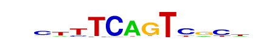
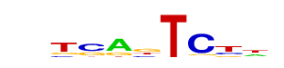

| p-value: | 1e-43 |
| log p-value: | -9.945e+01 |
| Information Content per bp: | 1.880 |
| Number of Target Sequences with motif | 263.0 |
| Percentage of Target Sequences with motif | 15.93% |
| Number of Background Sequences with motif | 2745.5 |
| Percentage of Background Sequences with motif | 6.02% |
| Average Position of motif in Targets | 50.4 +/- 19.6bp |
| Average Position of motif in Background | 51.5 +/- 37.2bp |
| Strand Bias (log2 ratio + to - strand density) | 10.0 |
| Multiplicity (# of sites on avg that occur together) | 1.06 |
| Motif File: | file (matrix) reverse opposite |
| Rank | Match Score | Redundant Motif | P-value | log P-value | % of Targets | % of Background | Motif file |
| 1 | 0.809 | 1e-42 | -97.324772 | 20.84% | 9.35% | motif file (matrix) | |
| 2 | 0.749 | 1e-37 | -86.894115 | 35.68% | 21.48% | motif file (matrix) | |
| 3 | 0.712 | 1e-37 | -86.863217 | 22.65% | 11.18% | motif file (matrix) | |
| 4 | 0.657 |  | 1e-29 | -68.113734 | 17.20% | 8.27% | motif file (matrix) |
| 5 | 0.666 |  | 1e-22 | -50.835877 | 20.78% | 12.07% | motif file (matrix) |
| 6 | 0.667 | 1e-21 | -49.881495 | 8.66% | 3.40% | motif file (matrix) | |
| 7 | 0.624 | 1e-15 | -35.059355 | 3.88% | 1.13% | motif file (matrix) |